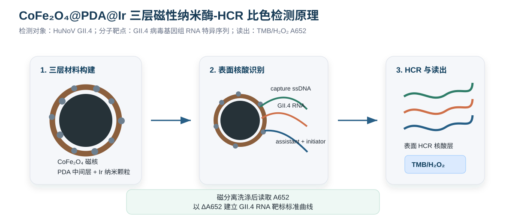

方案判断
本方案采用 CoFe₂O₄@PDA@Ir 三层磁性纳米酶作为核心功能材料，并以 HuNoV GII.4 病毒基因组 RNA 触发表面 HCR 放大检测。HCR 指杂交链式反应（hybridization chain reaction），是一种等温核酸放大策略。材料层级由商品化 CoFe₂O₄ 磁性核心、PDA 中间层和 Ir 外层纳米酶组成；识别与放大层由氨基修饰 ssDNA capture probe、GII.4 病毒 RNA、assistant probe 和 H1/H2 发夹探针共同完成。
在该体系中，GII.4 病毒 RNA 的序列识别事件被转化为颗粒表面的长链核酸聚合层。HCR 放大可在 CoFe₂O₄@PDA@Ir 表面形成更长、更厚的核酸层，更容易稳定影响 TMB/H₂O₂ 与 Ir 活性位点的接触效率，从而获得更可重复的 ΔA652。
保留的课题层级
- 核心材料仍为 CoFe₂O₄@PDA@Ir 三层磁性纳米酶。
- CoFe₂O₄ 提供磁响应和分离富集能力。
- PDA 提供金属负载和核酸探针连接界面。
- Ir 提供 TMB/H₂O₂ 比色催化活性。
需要重点验证的部分
- Ir 必须为分散颗粒状负载，不能形成完全致密壳层。
- Ir 负载后仍需保留可连接核酸探针的 PDA 暴露位点。
- 探针固定后 Ir 类过氧化物酶活性应保持可测。
- assistant probe 和 H1/H2 发夹探针的无靶标泄漏应保持较低水平。
- GII.4 RNA 触发表面 HCR 后 ΔA652 需稳定、可重复并可区分错配 RNA。
检测对象、分子靶点与识别元件
本方案中三个概念需要严格区分：检测对象是 HuNoV GII.4，分子靶点是其基因组 RNA 中的特异序列，识别元件是 ssDNA 探针。ssDNA 不直接识别完整病毒衣壳，而是通过 DNA-RNA 互补杂交识别病毒释放或提取得到的 RNA。
| 概念 | 本方案中的定义 | 实验体现 | 注意事项 |
|---|---|---|---|
| 检测对象 | Human norovirus GII.4，简称 HuNoV GII.4 或 GII.4 诺如病毒 | 方法最终服务于 GII.4 病毒污染或模型样品检测 | 最终结果按 GII.4 病毒相关核酸检测表述 |
| 分子靶点 | GII.4 病毒基因组 RNA 的特异序列 | 预实验使用 synthetic GII.4 RNA fragment，后续可扩展到提取病毒 RNA | 完整病毒样品需先裂解或提取 RNA |
| 识别元件 | 5'-NH₂-C6 修饰 ssDNA capture probe | 固定于 CoFe₂O₄@PDA@Ir 表面，与 GII.4 RNA 互补杂交 | 推荐使用 C6 spacer 提高杂交空间自由度 |
| 信号放大元件 | assistant ssDNA probe + H1/H2 ssDNA hairpins | 靶 RNA 将 HCR initiator 锚定到材料表面，触发表面 HCR | 需控制 H1/H2 无靶标泄漏 |
样品形式
- 方法建立：synthetic GII.4 RNA fragment。
- 后续验证：提取的 GII.4 病毒 RNA。
- 潜在应用：经裂解和 RNA 提取处理后的食品或环境样品。
检测链条
- HuNoV GII.4 经裂解或提取得到病毒 RNA。
- capture ssDNA 与 assistant probe 同时识别 GII.4 RNA 靶序列。
- assistant probe 引入 HCR initiator，触发表面 HCR。
- HCR 核酸层调控 CoFe₂O₄@PDA@Ir 对 TMB/H₂O₂ 的 A652 显色。
文献证据链与本方案定位
本方案的可行性由材料构建、表面连接、纳米酶显色、HuNoV GII.4 RNA 核酸识别和 HCR 核酸放大五条证据链共同支撑。证据强度较高的部分包括 PDA 通用包覆、PDA 锚定贵金属、Ir 类过氧化物酶活性和 Norovirus RNA 核酸检测；本实验重点验证表面 HCR 层对 CoFe₂O₄@PDA@Ir 催化显色的调控幅度。
| 论证问题 | 已有文献能支撑什么 | 本实验需要证明什么 | 证据强度 |
|---|---|---|---|
| CoFe₂O₄ 能否作为磁性核心 | 磁性铁氧体纳米颗粒可用于磁分离和 TMB/H₂O₂ 纳米酶体系。 | 商品化 CoFe₂O₄ 的分散性、磁响应和洗涤损失。 | 强 |
| PDA 能否包覆 CoFe₂O₄ | PDA 可在弱碱条件下沉积在多种材料表面；PDA-coated CoFe₂O₄ 负载 Pd 的文献提供了直接材料类比。 | 本批次 CoFe₂O₄ 的 PDA 包覆厚度和磁响应保留。 | 强 |
| PDA 能否锚定 Ir | PDA 可通过 N/O 位点配位金属离子并稳定金属纳米颗粒；PDA-金属纳米颗粒和 PDA-coated CoFe₂O₄@贵金属已有文献基础。 | Ir 在 CoFe₂O₄@PDA 表面的负载量、分散性和洗涤稳定性。 | 中强 |
| Ir 能否提供比色信号 | Ir 纳米颗粒具有类过氧化物酶活性，可催化 TMB/H₂O₂ 产生 A652 信号。 | 负载到 CoFe₂O₄@PDA 后活性是否保留，最优 pH、TMB、H₂O₂ 和材料浓度。 | 强 |
| 核酸探针能否固定 | PDA 表面可与氨基/巯基 DNA 发生固定，Mg²⁺可促进 PDA-DNA 偶联。 | Ir 分散负载后 PDA 位点是否仍可连接 FAM-capture DNA。 | 中强 |
| GII.4 RNA-HCR 能否稳定改变 A652 | Norovirus RNA 可通过核酸杂交、HCR/CHA 类等温核酸反应和磁分离策略检测；DNA/核酸层可调控金属纳米酶类过氧化物酶活性。 | GII.4 病毒 RNA 触发表面 HCR 后，ΔA652 是否足够稳定、可重复并可区分错配 RNA。 | 中强 |
检测原理
本方案采用单颗粒三层纳米酶-HCR 放大检测模式。商品化 CoFe₂O₄ 作为磁性核心，PDA 包覆后原位负载分散 Ir 纳米颗粒，形成 CoFe₂O₄@PDA@Ir。随后在仍暴露的 PDA/金属界面上固定 NH₂-C6 修饰的 ssDNA capture probe。GII.4 病毒 RNA 同时与 surface capture ssDNA 和 assistant ssDNA 杂交，使 assistant probe 携带的 HCR initiator 锚定在颗粒表面。加入 H1/H2 发夹探针后，表面 initiator 触发 HCR，形成厚核酸层，进而影响 TMB/H₂O₂ 与 Ir 表面的接触效率，表现为 A652 信号下降或稳定变化。

| 模块 | 组成 | 作用 | 选择理由 |
|---|---|---|---|
| 第一层 | 商品化 CoFe₂O₄ | 磁响应、磁分离和载体核心 | 降低磁核制备环节对批次稳定性的影响 |
| 第二层 | PDA | 包覆、黏附、Ir 锚定和核酸探针连接 | PDA 可在弱碱条件下沉积，并可与氨基/巯基修饰核酸发生界面固定 |
| 第三层 | 分散 Ir 纳米颗粒 | 催化 TMB/H₂O₂ 生成 oxTMB | Ir 具有类过氧化物酶活性，是比色信号核心 |
| 识别层 | NH₂-ssDNA capture probe + GII.4 RNA + assistant probe | 通过双位点互补识别 GII.4 病毒 RNA，并将 HCR initiator 锚定在材料表面 | 双位点识别有利于降低非特异背景 |
| 放大层 | H1/H2 发夹探针 | 在目标 RNA 触发下进行表面 HCR，形成厚核酸层 | 增强对 Ir 活性位点的空间屏蔽和扩散限制，提高 ΔA652 稳定性 |
本路线的关键验证内容包括：Ir 分散负载后是否仍保留足够 PDA 暴露区域，以及 HCR 层是否能在低背景条件下稳定调控 A652。该问题通过 Ir 负载梯度、FAM-探针固定量、H1/H2 泄漏对照和 HCR 前后纳米酶活性对比实验解决。
实验流程总览
- 购买商品化 CoFe₂O₄ 纳米颗粒，进行分散性、磁响应和粒径确认。
- 在 pH 8.5 Tris 条件下包覆 PDA，得到 CoFe₂O₄@PDA。
- 采用低、中、高 Ir 前驱体浓度梯度原位还原，得到 CoFe₂O₄@PDA@Ir。
- 比较三层材料的磁响应、Ir 分散状态、A652 活性和 PDA 暴露位点。
- 将 5'-NH₂-C6-ssDNA capture probe 固定到 CoFe₂O₄@PDA@Ir 表面。
- 设计 GII.4 病毒 RNA 靶区、assistant probe 和 H1/H2 发夹探针。
- 探针化三层纳米酶与 GII.4 RNA、assistant probe 在 37-45 °C 杂交 30-60 min，磁分离洗涤。
- 加入 H1/H2 发夹探针，在 25-37 °C 进行表面 HCR 30-90 min，再次磁分离洗涤。
- 加入 TMB/H₂O₂ 显色液，读取 A652，以 ΔA652 建立标准曲线。
- 设置错配 RNA、random RNA、无 assistant、无 H1/H2、无探针、无靶标、无 Ir 和 RNase 处理对照。
材料、试剂与仪器
主要材料
- 商品化 CoFe₂O₄ 纳米颗粒，作为磁性核心。
- 多巴胺盐酸盐，形成 PDA 包覆层。
- IrCl₃ 或 H₂IrCl₆、NaBH₄，用于 Ir 原位负载。
- 5'-NH₂-C6-ssDNA capture probe，固定于 CoFe₂O₄@PDA@Ir 表面。
- assistant probe，包含靶 RNA 互补区和 HCR initiator 区。
- H1/H2 发夹 DNA 探针，用于表面 HCR 放大。
- GII.4 synthetic RNA fragment 或提取病毒 RNA。
- TMB、H₂O₂ 和乙酸-乙酸钠缓冲液。
关键仪器与条件
- 磁力架、超声清洗器、恒温振荡器、pH 计。
- 酶标仪或 UV-Vis，用于 652 nm 读数。
- RNase-free 离心管、枪头、水和操作区。
- DLS/Zeta、TEM/SEM-EDS、XPS 用于材料验证。
| 采购/准备项 | 建议规格 | 用途 | 优先级 |
|---|---|---|---|
| CoFe₂O₄ 纳米颗粒 | 商品化，约 40 nm 或供应商可提供粒径证明 | 磁性核心 | 必需 |
| 多巴胺盐酸盐 | 分析纯或生化级 | PDA 包覆 | 必需 |
| IrCl₃ 或 H₂IrCl₆ | 贵金属前驱体 | Ir 负载 | 必需 |
| NaBH₄ | 新鲜现配 | 还原 Ir 前驱体 | 必需 |
| FAM-NH₂-C6-ssDNA | 一端 FAM，一端 NH₂-C6 或等效设计 | 定量验证探针固定 | 强烈建议 |
| NH₂-C6-ssDNA capture probe | 20-30 nt，靶向 GII.4 RNA | 正式识别探针 | 必需 |
| assistant ssDNA probe | 靶 RNA 互补区 + HCR initiator | 桥接目标 RNA 与 HCR | 必需 |
| H1/H2 hairpin ssDNA | 40-60 nt，按 initiator 设计 | HCR 放大 | 必需 |
| synthetic GII.4 RNA fragment | 80-150 nt，覆盖 capture/assistant 位点 | 方法建立 | 必需 |
| mismatch/random RNA | 同长度或相近长度 | 特异性对照 | 必需 |
对照设计
| 目的 | 对照 | 判断标准 |
|---|---|---|
| 证明三层材料必要性 | CoFe₂O₄、CoFe₂O₄@PDA、CoFe₂O₄@PDA@Ir | Ir 负载后 A652 催化信号增强或反应速率提高 |
| 证明探针可固定 | FAM-capture DNA 固定于 CoFe₂O₄@PDA 与 CoFe₂O₄@PDA@Ir | 三层材料上仍可检测到探针固定量 |
| 证明 HCR 触发特异性 | 完全互补 GII.4 RNA、单碱基错配 RNA、多碱基错配 RNA、random RNA | 完全互补靶标引起的 ΔA652 大于错配和 random 对照 |
| 证明放大反应必要性 | 无 assistant probe、无 H1/H2、H1/H2 自发泄漏空白 | 缺少 assistant 或 H1/H2 时 ΔA652 明显降低，泄漏空白可控 |
| 证明 RNA 依赖性 | RNase 处理靶标、未处理靶标 | RNase 处理后信号变化减弱或消失 |
| 证明背景可控 | 无探针、无靶标、TMB/H₂O₂ 空白、无 Ir 对照 | 背景信号低且重复性可接受 |
关键预实验判定路线
本方案能否顺利推进，取决于五个连续判定点。每一阶段均设置明确放行标准，便于判断问题出在材料、探针固定还是核酸信号转导。
| 阶段 | 核心实验 | 通过表现 | 未通过时的调整 |
|---|---|---|---|
| 材料第一关 | CoFe₂O₄@PDA 包覆验证 | 粒径/Zeta 改变，N 1s 或 PDA 特征信号出现，磁响应保留 | 调整多巴胺浓度、pH 8.5 缓冲液和包覆时间 |
| 材料第二关 | CoFe₂O₄@PDA@Ir 负载验证 | EDS/XPS 检出 Ir，A652 高于 CoFe₂O₄@PDA，磁分离后活性保留 | 降低 Ir 前驱体和 NaBH₄ 强度，延长吸附时间，避免团聚 |
| 界面连接关 | FAM-capture DNA 固定量 | CoFe₂O₄@PDA@Ir 的固定量达到可测水平，random DNA 背景低 | 比较 NH₂-C6 与 SH-C6 探针，降低 Ir 负载，增加 Mg²⁺ |
| 活性保留关 | 探针固定前后 TMB/H₂O₂ 显色 | 固定后 A652 仍有稳定读数，孔间重复性可接受 | 降低探针密度，加入 spacer，缩短固定时间 |
| 检测成立关 | 完全互补 GII.4 RNA 触发表面 HCR，并与错配 RNA 对比 | 完全互补 GII.4 RNA 产生可重复 ΔA652，错配、random、无 assistant 和无 H1/H2 变化较小 | 重新设计 assistant/H1/H2，降低发夹泄漏，优化 Mg²⁺、温度和反应时间 |
实验推进安排
整个体系建议分阶段推进，先验证材料和界面连接，再进入核酸识别和比色检测，避免同时改变多个变量导致问题来源不清。
| 阶段 | 主要任务 | 输出结果 | 是否进入下一阶段 |
|---|---|---|---|
| 第 1 阶段 | CoFe₂O₄ 分散、PDA 包覆、Ir 负载梯度 | 材料照片、磁分离记录、A652 活性、基础表征 | 选择 1 个最优 Ir 负载条件 |
| 第 2 阶段 | FAM-NH₂-ssDNA 固定量与活性保留 | 固定效率、洗涤稳定性、A652 保留率 | 确定 capture probe 浓度和固定时间 |
| 第 3 阶段 | GII.4 RNA + assistant + H1/H2 的 HCR 可行性 | 完全互补与无靶标、无 assistant、无 H1/H2 对照的 ΔA652 差异 | 确定 HCR 是否可用于主检测 |
| 第 4 阶段 | 参数优化和标准曲线 | 最优 pH、TMB/H₂O₂、H1/H2 浓度、标准曲线和重复性 | 进入特异性和样品验证 |
| 第 5 阶段 | 错配、random RNA、基质加标和真实样品扩展 | 特异性、抗干扰、加标回收和方法适用性 | 形成论文数据框架 |
关键问题与优化策略
| 关键问题 | 可能原因 | 优化策略 |
|---|---|---|
| HCR 泄漏背景高 | H1/H2 发夹稳定性不足或 assistant probe 非特异吸附 | 重新设计发夹茎长和互补区，降低 H1/H2 浓度，增加洗涤和封闭 |
| HCR 后信号变化不足 | 表面 HCR 层不够厚或距离 Ir 活性位点过远 | 提高 H1/H2 浓度，延长 HCR 时间，优化 Mg²⁺，调整 capture/assistant 位置 |
| RNA 降解 | RNase 污染 | 使用 RNase-free 耗材和水，设置 RNase 处理对照 |
| Ir 覆盖过密 | 高金属负载造成 PDA 位点被遮挡 | 降低 Ir 前驱体浓度和还原剂用量，筛选分散颗粒状负载条件 |
| 探针固定后活性下降 | 核酸层遮挡 Ir 活性位点 | 降低探针密度，加入间隔臂，比较 NH₂-C6 与 SH-C6 固定方式 |
| 非特异吸附背景高 | RNA 或蛋白残留吸附到颗粒表面 | BSA/ssDNA 封闭，增加盐浓度和洗涤强度，优化杂交缓冲液 |
| 靶标设计不佳 | RNA 二级结构强或序列保守性不足 | 选择 ORF1-ORF2 junction、RdRp 或 VP1 保守区域，进行 BLAST 和 Tm 评价 |
关键文献
| 文献 | DOI/链接 | 支撑内容 |
|---|---|---|
| Molecular Diagnostic Methods for Detection and Characterization of Human Noroviruses | 10.2174/1874285801610010078摘 | 支撑 HuNoV 为正链 ssRNA 病毒，以及诺如病毒分子检测路线。 |
| Detection of Norovirus RNA based on catalytic hairpin assembly and magnetic separation of DNA AgNCs | 10.1016/j.molliq.2021.117870摘 | 直接支撑 Norovirus RNA、磁分离和核酸放大检测路线。 |
| DNA-mediated inhibition of peroxidase-like activities on platinum nanoparticles for colorimetric detection of nucleic acids | 10.1016/j.bios.2017.02.025摘 | 支撑 DNA/核酸层可调控金属纳米酶 TMB/H₂O₂ 活性，为 HCR 核酸层引起 A652 变化提供相邻机制证据。 |
| Facile synthesis of iridium nanoparticles with superior peroxidase-like activity | 10.1016/j.snb.2016.11.145PDF摘 | 支撑 Ir 纳米酶催化 TMB/H₂O₂ 显色。 |
| Mg²⁺-promoted high-efficiency DNA conjugation on polydopamine surfaces | 10.1016/j.aca.2024.342382PDF摘 | 支撑 DNA probe 固定到 PDA 表面。 |
| Palladium(0) nanoparticles supported on polydopamine coated CoFe₂O₄ | 10.1016/j.apcatb.2017.02.037PDF摘 | 直接支撑 CoFe₂O₄@PDA@贵金属三层材料构建和磁分离稳定性。 |
| Synthesis and catalytic performance of polydopamine supported metal nanoparticles | 10.1038/s41598-020-67458-9摘 | 支撑 PDA 对多种金属纳米颗粒的配位、还原和稳定作用。 |
| Mussel-Inspired Surface Chemistry for Multifunctional Coatings | 10.1126/science.1147241PDF摘 | 支撑 PDA 包覆商品化 CoFe₂O₄ 的界面改性基础。 |
| Intrinsic peroxidase-like activity of ferromagnetic nanoparticles | 10.1038/nnano.2007.260PDF摘 | 支撑磁性纳米酶、磁分离和 TMB/H₂O₂ 比色读出基础。 |